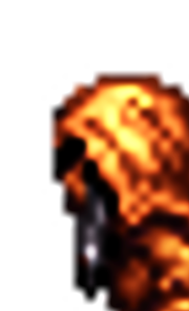

<div class="container whatIs">
    <div class="row">
        <div class="col m12">
            <p class="normal-text whatisTitle">Nightmaria is a web terror experience developed to be used with the scroller.</p>
        </div>
        <div class="col m6 finish wleft center-align"> <i class="fa fa-users" aria-hidden="true"></i>
            <div class="title">In order to prove myself that I'm capable of using several Front-End tools, this style-based project is the final test done in the Generation Spain course imparted in Seville.</div>
        </div>
        <div class="col m6 finish wleft center-align"> <i class="fa fa-heart-o" aria-hidden="true"></i></i>
            <div class="title">Scrolling experiences doesn't remain in this kind of experience. It also serves to explain a product, give a good user experience on a website, and spread love thru the web</div>
        </div>
        <div class="col m9 finish wleft center-align whatIsExplanation"> <i class="fa fa-snapchat-ghost" aria-hidden="true"></i>
            <div class="title">The terror surrounds Claudia's nightmares. The ghost of her past don't leave her. The freedom that she used to live with has came back from her own subconscious. </div>
            <br>
            <div class="title">This experience comes out from her dreams. This one, after a sudden crash, could be her last one. It's only about you...</div>
        </div>
    </div>
    
</div>
